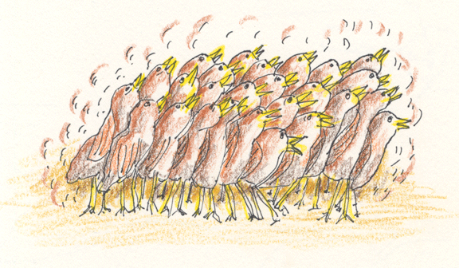

|  | ||||||||||
|
Momma Hen
Dedicated to all Mothers |
||||||||||
| Green is my favorite color and chocolate my favorite treat. Ameraucana chickens lay teal-green colored eggs and Welsummer chickens chocolate colored eggs, so I ordered twenty-five chicks from a small hatchery farm in Pennsylvania. On May 6, my friend picked up the newly hatched chicks at 10:00 am and drove to Maine. I met her at 9:30 pm. The timing worked out great, as I had a broody hen sitting on just laid eggs that would be replaced with the new chicks. Home by 10:30 pm, I quietly went into the hen house with a box of twenty-five noisy chicks. All the eggs were removed from the nest, and one by one the chicks placed under the hen. As each chick was put in the nest the chirping was less and less until finally there was no chirping. I knew all the chicks were cozy and warm under broody Momma hen. The next morning, Momma was happily sitting in her box surrounded by chicks, some had their heads sticking out from her wing feathers. Contented, the chicks chirped in soft sweet voices. It was a warm sunny day, so Momma brought her new chicks outside, scratched the ground, and showed them how to find their own food. She visited her favorite places, under trees and bushes and in the mulched garden, looking for delicious bugs and worms to feed her chicks. When the chicks were chilly or tired, they all ran under Momma. She spread her two wings like little tents to keep the chicks warm. At dusk, Momma led all the chicks into the chicken house to the warmth and safety of their night-time nesting box. Each day Momma would take the chicks all over the farm. One day, while doing mid-day chores, I heard a chorus of loud shrill cries of distress from the two-week old chicks. I quickly located the frightened chicks standing in a group. Momma hen was not with them. I ran around calling “Momma, Momma,” but I could not find her. I had an uneasy feeling, as I had never seen a mother hen abandon her new chicks. They were small, still full of down and just getting some wing feathers. Meanwhile, Rob heard me calling Momma hen, and he joined the search. He found feathers by an outbuilding where she must have been killed by a hawk. Fortunately, all the chicks escaped unharmed. |
There was nothing I could do for the chicks at the moment. They were in a safe place and it was a dry, warm day. I was concerned about how to herd all twenty-five into the chicken house when it was bed time. As dusk approached, I went to find the chicks, and discovered they were already in the chicken house, jumping in and out of the nesting box they had shared with Momma. I fed them cooked scrambled egg, small grains and grass clippings in little dishes, and filled the chick waterer full, so they had plenty to drink. The next morning the chicks were running around the chicken house. I opened the door and they ran outside heading for the places Momma had taken them. I checked the chicks several times during the day to feed them and make sure they were safe. The coming nights were going to be cold, so in the corner of the chicken house by their nesting box, I hung a light bulb with reflective shade for heat, and partially closed the space to make it warmer. Later, when the chicks came in for bed, there was a chorus of soft happy chirping as they ate, drank and preened under the warmth of the light. Each day the chicks went outside and stayed together all day in a group. At night, as they grew larger they filled two, then three of the nesting boxes. By three weeks, they had most of their feathers. Their wings were strong, so they could fly up to the high perches where the older chickens roosted at night. All twenty-five chicks survived and matured into beautiful hens and roosters. This winter the hens began to lay beautiful chocolate and teal-green colored eggs. Momma hens’ mothering and teaching gave the chicks a great start in life. |
|||||||||